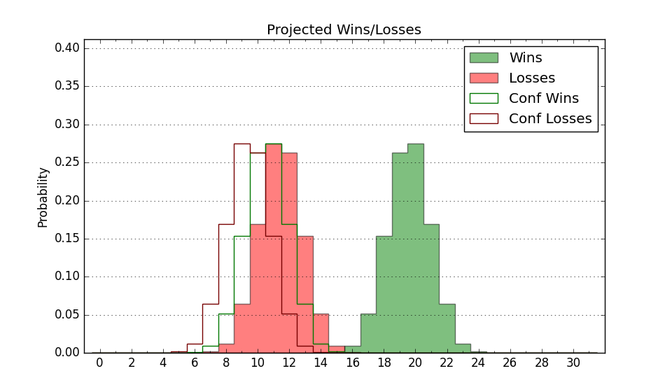

| Home | Game Probabilities | Conferences | Preseason Predictions | Odds Charts | NCAA Tournament |
| City: | Provo, Utah | |
| Conference: | Big 12 (6th)
| |
| Record: | 6-5 (Conf) 15-7 (Overall) | |
| Ratings: | Comp.: 22.3 (31st) Net: 22.5 (31st) Off: 120.1 (18th) Def: 97.6 (58th) SoR: 35.7 (49th) |
| Remaining | ||||||
|---|---|---|---|---|---|---|
| Date | Opponent | Win Prob | Pred. | |||
| 2/8 | @ Cincinnati (45) | 43.4% | L 67-69 | |||
| 2/11 | @ West Virginia (42) | 40.4% | L 67-70 | |||
| 2/15 | Kansas St. (69) | 81.3% | W 80-70 | |||
| 2/18 | Kansas (13) | 48.5% | L 73-74 | |||
| 2/22 | @ Arizona (8) | 19.6% | L 73-84 | |||
| 2/26 | @ Arizona St. (57) | 51.8% | W 73-72 | |||
| 3/1 | West Virginia (42) | 69.8% | W 71-66 | |||
| 3/4 | @ Iowa St. (10) | 20.6% | L 70-80 | |||
| 3/8 | Utah (73) | 83.1% | W 81-70 | |||
| Previous | Game Score | |||||
| Date | Opponent | Win Prob | Result | Off | Def | Net |
| 11/5 | Central Arkansas (340) | 99.0% | W 88-50 | -4.7 | 13.1 | 8.5 |
| 11/8 | UC Riverside (159) | 94.0% | W 86-80 | -5.5 | -9.0 | -14.5 |
| 11/13 | Queens (201) | 95.9% | W 99-55 | 6.3 | 20.0 | 26.3 |
| 11/16 | Idaho (246) | 97.3% | W 95-71 | -1.7 | -3.3 | -5.0 |
| 11/23 | Mississippi Valley St. (364) | 99.9% | W 87-43 | -5.9 | -0.1 | -6.0 |
| 11/28 | (N) Mississippi (27) | 45.1% | L 85-96 | -1.8 | -7.9 | -9.6 |
| 11/29 | (N) North Carolina St. (101) | 82.1% | W 72-61 | -5.0 | 5.2 | 0.2 |
| 12/3 | @Providence (75) | 59.4% | L 64-83 | -4.4 | -33.2 | -37.7 |
| 12/11 | Fresno St. (252) | 97.5% | W 95-67 | -2.8 | -2.2 | -5.0 |
| 12/14 | (N) Wyoming (160) | 89.6% | W 68-49 | 1.6 | 11.9 | 13.5 |
| 12/20 | Florida A&M (342) | 99.1% | W 103-57 | 1.5 | 11.1 | 12.6 |
| 12/31 | Arizona St. (57) | 78.5% | W 76-56 | 1.0 | 12.1 | 13.1 |
| 1/4 | @Houston (2) | 9.4% | L 55-86 | -8.2 | -19.6 | -27.8 |
| 1/7 | Texas Tech (7) | 44.9% | L 67-72 | -4.8 | 0.4 | -4.4 |
| 1/11 | @TCU (83) | 61.1% | L 67-71 | -0.8 | -3.4 | -4.2 |
| 1/14 | Oklahoma St. (105) | 89.8% | W 85-69 | 5.3 | 0.4 | 5.7 |
| 1/18 | @Utah (73) | 59.1% | L 72-73 | -16.8 | 6.2 | -10.6 |
| 1/21 | @Colorado (96) | 69.6% | W 83-67 | 15.7 | 2.2 | 18.0 |
| 1/25 | Cincinnati (45) | 72.3% | W 80-52 | 23.0 | 10.3 | 33.3 |
| 1/28 | Baylor (17) | 55.1% | W 93-89 | 17.2 | -15.2 | 2.0 |
| 2/1 | @UCF (71) | 57.3% | W 81-75 | -7.2 | 8.9 | 1.7 |
| 2/4 | Arizona (8) | 45.3% | L 74-85 | -9.6 | -7.6 | -17.2 |
| Stats & Trends | |||||
|---|---|---|---|---|---|
| Current | Day | Week | Month | Season | |
| Composite | 22.3 | -0.8 | -0.8 | +2.7 | +4.7 |
| Comp Rank | 31 | -- | -- | +10 | +6 |
| Net Efficiency | 22.5 | -0.9 | -0.9 | +2.4 | -- |
| Net Rank | 31 | -- | -1 | +14 | -- |
| Off Efficiency | 120.1 | -0.5 | -1.2 | +1.5 | -- |
| Off Rank | 18 | -- | -1 | +10 | -- |
| Def Efficiency | 97.6 | -0.4 | +0.3 | +0.9 | -- |
| Def Rank | 58 | -7 | +5 | +17 | -- |
| SoS Rank | 64 | +5 | +13 | +185 | -- |
| Exp. Wins | 19.6 | -0.7 | -0.3 | +0.4 | +0.9 |
| Exp. Conf Wins | 10.6 | -0.7 | -0.3 | +0.4 | +0.9 |
| Conf Champ Prob | 0.0 | -0.1 | -- | -0.3 | -1.7 |

| Advanced Stats | ||
|---|---|---|
| Stat | Value | Rank |
| Off Eff FG % | 0.595 | 9 |
| Off Ast Ratio | 0.187 | 14 |
| Off ORB% | 0.345 | 37 |
| Off TO Rate | 0.139 | 107 |
| Off FT Ratio | 0.307 | 247 |
| Def Eff FG % | 0.488 | 110 |
| Def Ast Ratio | 0.137 | 109 |
| Def ORB% | 0.203 | 2 |
| Def TO Rate | 0.164 | 89 |
| Def FT Ratio | 0.308 | 128 |